건설기계설비산업기사 (2018-04-28 기출문제)
1과목: 기계제작법
1. 일반적으로 래핑가공의 장점이 아닌 것은?
- 매끈한 거울면을 얻을 수 있다.
- 정밀도가 높은 제품을 얻을 수 있다.
- 비산하는 랩제는 다른 기계나 가공물을 마모시키지 않는다.
- 가공된 면은 내식성과 내마멸성이 좋다.
(정답률: 94%)

2. 길이 400mm, 지름 50mm인 둥근봉을 절삭속도 100m/min로 1회 선삭하려면 절삭시간은 약 몇 분인가? (단, 이송속도는 0.1mm/rev이고, 공구의 접근 또는 설치를 위한 시간은 무시한다.)
- 6.3
- 4.3
- 2.7
- 8.7
(정답률: 18%)
3. 절삭공구 재료의 구비 조건으로 틀린 것은?
- 고온 경도가 클 것
- 인성이 작을 것
- 내마모성이 좋을 것
- 가격이 저렴할 것
(정답률: 79%)
4. 빛을 렌즈나 반사경을 통해 집적하여 가공물에 쏘이면 순간적으로 일부분이 가열되어 용해 또는 증발되는 원리를 이용한 비접촉 가공법은?
- 전해연마
- 레이저 가공
- 전해 가공
- 숏 피닝
(정답률: 87%)
5. 일반적으로 가공물의 중심을 잡거나 정반 위에서 가공물을 이동시켜 평행선을 그을 때 사용하는 공구는?
- 서피스 게이지
- 디바이더
- 직각자
- 펀치
(정답률: 50%)
6. 강재의 표면만 단단하게 만들기 위해 저탄소강 등에 탄소를 침입 및 확산시켜 표면만 열처리하는 방법은?
- 침탄법
- 질화법
- 세라다이징
- 고주파경화법
(정답률: 85%)
7. 지름 26.00mm의 실린더 안지름을 측정한 결과 26.02mm일 때 오차율은?
- 0.000769 [0.0769%]
- 0.000869 [0.0869%]
- 0.000669 [0.0669%]
- 0.00⑤69 [0.⑤69%]
(정답률: 77%)
8. 전기 저항용접을 할 때 일반적인 주의 사항이 아닌 것은?
- 모재 접합부의 녹, 기름, 도료 등 불순물을 제거한다.
- 전극의 접촉 저항이 최대가 되게 한다.
- 전극의 과열을 방지한다.
- 모재의 형상, 두께 등에 알맞은 전극을 택한다.
(정답률: 85%)
9. 담금질 후 잔류 응력을 제거하기 위해 A1변태점 온도 이하에서 가열하는 열처리는?
- 담금질
- 풀림
- 불림
- 뜨임
(정답률: 43%)
10. 다음 중 센터리스 연삭기의 특징으로 가장 거리가 먼 것은?
- 중공원통 연삭에 편리하며 연삭 여유가 작아도 가공이 가능하다.
- 연삭숫돌의 폭이 커서 지름의 마멸이 적고 수명이 길다.
- 가늘고 긴 원통형 가공물을 연삭하기 쉽다.
- 대형 중량물의 연삭에 유리하다.
(정답률: 79%)
11. 특수 주조법에서 왁스나 파라핀으로 모형을 만들고 여기에 내화물질을 바른 후 경화시켜 주조하는 방법은?
- 셸 몰드법
- 다이캐스팅
- 원심주조법
- 인베스트먼트법
(정답률: 45%)
12. 단조 중 업셋(Upset)작업에 대한 설명으로 가장 적절한 것은?
- 재료에 단을 붙인다.
- 가늘고 길게 늘인다.
- 길이를 줄여 단면을 크게 한다.
- 단면을 작게 하여 길이를 늘인다.
(정답률: 32%)
13. 주물에 사용되는 도형재의 성질이 아닌 것은?
- 주입온도보다 낮은 내열도가 있을 것
- 고온에서 용탕에 해로운 영향이 없을 것
- 주입 시 떨어져 나가는 박리현상이 없을 것
- 칠하기 쉽고 미립이어서 도포면이 고울 것
(정답률: 56%)
14. 절삭공구의 수명 한계를 판정하는 방법이 아닌 것은?
- 절삭저항의 주분력이 절삭 개시보다 일정량 감소하였을 때
- 절삭면에 광택이 있는 무늬가 생겼을 때
- 완성치수의 변화가 일정량에 달했을 때
- 절삭날의 마멸이 일정량에 달했을 때
(정답률: 69%)
15. 화병과 같이 입구가 작고 중앙 부분이 큰 용기를 제작하는 방법으로 1차 가공된 원통형 소재를 확장시키는 가공법은?
- 게린법
- 마포밍법
- 벌징
- 하이드로포밍법
(정답률: 39%)
16. 다음 중 각도 측정기가 아닌 것은?
- 수준기
- 공구현미경
- 오토 콜리메이터
- 플러시 핀 게이지
(정답률: 48%)
17. 다음 중 드릴의 파손 원인이 아닌 것은?
- 디닝이 너무 커서 드릴이 약해졌을 때
- 이송이 너무 커서 절삭저항이 증가할 때
- 구멍에 절삭 칩이 배출되지 않고 있을 때
- 절삭 날이 규정된 각도와 형상으로 연삭되었을 때
(정답률: 58%)
18. 평면이나 곡면을 끝손질 할 때 소량의 금속을 긁어 깎아내는 공구는?
- 펀치
- 스크레이퍼
- 쇠톱
- 드릴
(정답률: 64%)
19. 브로칭 가공에 대한 설명으로 옳지 않는 것은?
- 브로치의 형상에 따라 다양한 단면 형상의 공작물을 가공할 수 있다.
- 보통의 경우 4회 통과 운동으로 가공을 완료하므로 작업시간이 매우 길다.
- 매우 깨끗하고 균일한 다듬질 면을 얻을 수 있다.
- 외면 브로칭의 경우도 내면 브로칭의 경우와 마찬가지로 많은 절삭을 동시에 할 수 있다.
(정답률: 42%)
20. 가스용접에서 가변압식 토치 팁의 번호를 옳게 나타내는 것은?
- 산성 불꽃으로 용접할 때 매시간 당 아세틸렌의 소비량(ℓ)
- 산성 불꽃으로 용접할 때 매분 당 아세틸렌의 소비량(ℓ)
- 중성 불꽃으로 용접할 때 매시간 당 아세틸렌의 소비량(ℓ)
- 중성 불꽃으로 용접할 때 매분 당 아세틸렌의 소비량(ℓ)
(정답률: 53%)
2과목: 재료역학
21. 그림과 같은 단면을 갖는 기둥의 세장비는? (단, 기둥의 길이 ℓ =2m이다.)
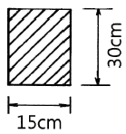
- 251.6
- 234.3
- 106.9
- 46.2
(정답률: 69%)
22. 길이 100cm, 지름 2cm인 환봉이 하중을 받아 길이가 100.3cm, 지름이 1.9984cm로 변하였다면, 이 재료의 포아송의 비는?
- 0.41
- 0.38
- 0.32
- 0.27
(정답률: 70%)
23. 단면의 지름이 4cm인 기둥에 20kN의 인장하중이 작용할 때, 단면에 발생하는 응력은 몇 MPa인가?
- 15.9
- 23.9
- 39.9
- 55.9
(정답률: 66%)
24. 아래 그림과 같은 균일분포 하중 ω를 받는 외팔보의 최대 굽힘모멘트는 몇 kN·m인가?
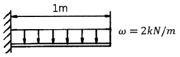
- 1
- 2
- 10
- 20
(정답률: 73%)
25. 어떤 봉에 인장력이 작용하였을 때 발생한 단위 체적 당 탄성변형에너지(u)에 대한 식으로 옳은 것은? (단, σ는 봉에 작용하는 응력, ε은 봉에서 발생한 선형 변형율, E는 봉재료의 세로탄성계수이다.)
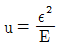
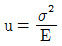
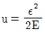
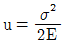
(정답률: 80%)
26. 원형 단면축이 비틀림 모멘트를 받을 때 생기는 비틀림 각에 대한 설명으로 틀린 것은?
- 축 지름의 네제곱에 반비례한다.
- 극단면 2차 모멘트에 비례한다.
- 전단 탄성계수에 반비례한다.
- 비틀림 모멘트에 비례한다.
(정답률: 83%)
27. 2축 응력상태에서 σx=40MPa, σy=22MPa 일 때, 최대전단응력은 몇 MPa인가?
- 9
- 18
- 24
- 36
(정답률: 72%)
28. 극한강도가 420MPa이고 길이가 2m의 강봉이 최대 허용 인장하중을 받아 1mm 늘어났다. 이 때의 안전율은? (단, 탄성계수 E=210GPa이다.)
- 5
- 4
- 3
- 2
(정답률: 23%)
29. 같은 전단력이 작용할 때 원형 단면보의 지름을 2배로 하면 최대전단응력은 몇 배가 되는가?
- 1/16
- 1/8
- 1/4
- 1/2
(정답률: 73%)
30. 다음 중 해당되는 물리량의 단위로 틀린 것은?
- 탄성계수 : N/m2
- 변형률 : mm
- 단위 길이 당 분포하중 : N/m
- 변위 : m
(정답률: 48%)
31. 단순보의 중앙에 40kN의 집중하중이 작용한다. 이 보의 단면의 높이가 10cm라 할 때, 폭은 몇 cm인가? (단, 보의 길이는 1m이고, 허용 굽힘응력은 200MPa이다.)
- 1
- 2
- 3
- 4
(정답률: 67%)
32. 지름 20mm, 길이 400mm의 환봉에 20kN의 인장력이 작용하였을 때, 이 환봉은 약 몇 mm 늘어나는가? (단, 세로 탄성계수는 210GPa이다.)
- 0.06
- 0.12
- 0.18
- 0.24
(정답률: 78%)
33. 양단이 고정된 봉에서 온도가 15℃에서 –5℃로 내려갔을 때 봉에서 발생하는 열응력의 크기는 약 몇 MPa인가? (단, 선팽창계수는 α=1.2×10-5/℃이고, 탄성계수 E=210GPa이다.)
- 12.6
- 25.2
- 50.4
- 100.8
(정답률: 71%)
34. 지름이 50mm이고 길이 1m당 0.25°의 비틀림 각이 생기는 축이 매분 300회전할 때 전달동력은 약 몇 kW인가? (단, 전단 탄성계수는 G=80GPa이다.)
- 385
- 64.3
- 26.7
- 6.7
(정답률: 58%)
35. 그림과 같은 보에서 반력 RB는 몇 N인가?
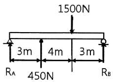
- 910
- 915
- 920
- 925
(정답률: 37%)
36. 다음 그림과 같은 단면에서 X-X축에 대한 단면계수는?
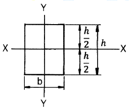
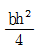
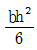
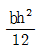
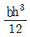
(정답률: 45%)
37. 길이가 100cm인 외팔보의 자유단에 4kN의 집중하중이 작용할 때 최대 처짐량은 몇 cm인가? (단, 단면 2차모멘트 I=300cm4, 탄성계수 E=210GPa이다.)
- 21.2
- 2.12
- 0.212
- 0.0212
(정답률: 67%)
38. 그림과 같은 외팔보의 굽힘모멘트 선도로 적당한 것은?
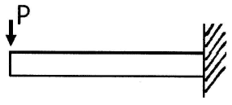
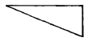
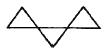
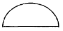
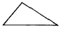
(정답률: 58%)
39. σx=500MPa, σy=300MPa, τxy=75MPa인 평면응력 상태에서 최대전단응력의 크기는 몇 MPa인가?
- 75
- 100
- 125
- 150
(정답률: 56%)
40. 4cm×8cm인 직사각형 단면의 봉에 그림과 같이 6400N의 압축하중이 작용할 때, θ=30°인 단면에서의 수직응력과 전단응력은 각각 약 몇 kPa인가?
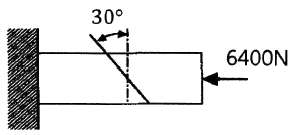
- 500, 866
- 866, 500
- 1500, 866
- 866, 1500
(정답률: 75%)
3과목: 기계설계 및 기계재료
41. 플라스틱 재료의 특성을 설명한 것 중 틀린 것은?
- 대부분 열에 약하다.
- 대부분 내구성이 높다.
- 대부분 전기 절연성이 우수하다.
- 금속 재료보다 체적당 가격이 저렴하다.
(정답률: 70%)
42. 섬유강화금속(FRM)의 특성을 설명한 것 중 틀린 것은?
- 비강도 및 비강성이 높다.
- 섬유축 방향의 강도가 작다.
- 2차 성형성, 접합성이 있다.
- 고온의 역학적 특성 및 열적안정성이 우수하다.
(정답률: 74%)
43. 주철의 접종(inoculation) 및 그 효과에 대한 설명으로 틀린 것은?
- Ca-Si 등을 첨가하여 접종을 한다.
- 핵생성을 용이하게 한다.
- 흑연의 형상을 개량한다.
- 칠(chill)화를 증가시킨다.
(정답률: 27%)
44. 마텐자이트(Martensite) 및 그 변태에 대한 설명으로 틀린 것은?
- 경도가 높고, 취성이 있다.
- 상온에서는 준안정상태이다.
- 마텐자이트 변태는 확산변태를 한다.
- 강을 수중에 담금질하였을 때 나타나는 조직이다.
(정답률: 34%)
45. 알루미늄합금인 Al-Mg-Si의 강도를 증가시키기 위한 가장 좋은 방법은?
- 시효경화(age-hardening) 처리한다.
- 냉간가공(cold work)을 실시한다.
- 담금질(quenching) 처리한다.
- 불림(normalizing) 처리한다.
(정답률: 40%)
46. 황동계 실용 합금인 톰백에 관한 설명으로 틀린 것은?
- 전연성이 우수하다.
- 5~20%의 Sn을 함유하는 황동이다.
- 코이닝하기 쉬워 메달, 동전 등에 사용된다.
- 색깔이 금색에 가까워서 모조금으로 사용된다.
(정답률: 80%)
47. 다음 중 고속도공구강(SKH 2)의 표준 조성으로 옳은 것은?
- 18%W-4%Cr-1%V
- 17%Cr-9%W-2%Mo
- 18%Co-4%Cr-1%V
- 18%W-4%V-1%Cr
(정답률: 78%)
48. 0.8%C 이하의 아공석강에서 탄소함유량 증가에 따라 감소하는 기계적 성질은?
- 경도
- 항복점
- 인장강도
- 연신율
(정답률: 48%)
49. 노에 들어가지 못하는 대형부품의 국부담금질, 기어, 톱니나 선반의 베드면 등의 표면을 경화시키는데 가장 많이 사용하는 열처리 방법은?
- 화염경화법
- 침탄법
- 질화법
- 청화법
(정답률: 34%)
50. 금속재료 중 일정 온도에서 갑자기 전기 저항이 0(zero)이 되는 현상은?
- 공유
- 초전도
- 이온화
- 형상기억
(정답률: 77%)
51. 헬리컬 기어에서 잇수가 50, 비틀림각이 20°일 경우 상당평기어 잇수는 약 몇 개인가?
- 40
- 50
- 60
- 70
(정답률: 16%)
52. 유체 클러치의 일종인 유체 토크 컨버터(fluid torque converter)의 특징을 설명한 것 중 틀린 것은?
- 부하에 의한 원동기의 정지가 없다.
- 장치 내에 스테이터가 있을 경우 작동 효율을 97% 수준까지 올릴 수 있다.
- 무단변속이 가능하다.
- 진동 및 충격을 완충하기 때문에 기계에 무리가 없다.
(정답률: 22%)
53. 볼 베어링에서 작용 하중은 5kN, 회전수가 4000rpm이며, 이 베어링의 기본 동정격하중이 63kN이라면 수명은 약 몇 시간인가?
- 6300시간
- 8300시간
- 9500시간
- 10200시간
(정답률: 34%)
54. 다음 중 일반적으로 안전율을 가장 크게 잡는 하중은? (단, 동일 재질에서 극한강도 기준의 안전율을 대상으로 한다.)
- 충격하중
- 편진 반복하중
- 정하중
- 양진 반복하중
(정답률: 64%)
55. 압축 코일 스프링의 소선 지름이 5mm, 코일의 평균 지름이 25mm이고, 200N의 하중이 작용할 때 스프링에 발생하는 최대전단응력은 약 몇 MPa인가? (단, 스프링 소재의 가로 탄성계수(G)는 80GPa이고, Wahl의 응력수정계수 식 [
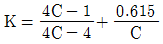
, C는 스프링 지수]을 적용한다.)- 82
- 98
- 133
- 152
(정답률: 15%)
56. 브레이크 드럼축에 754N·m의 토크가 작용하면 축을 정지하는데 필요한 제동력은 약 몇 N인가? (단, 브레이크 드럼의 지름은 400mm이다.)
- 1920
- 2770
- 3310
- 3770
(정답률: 20%)
57. 축의 홈 속에서 자유로이 기울어 질 수 있어 키가 자동적으로 축과 보스에 조정되는 장점이 있지만, 키 홈의 깊이가 커서 축의 강도가 약해지는 단점이 있는 키는?
- 반달 키
- 원뿔 키
- 묻힘 키
- 평행 키
(정답률: 34%)
58. 리벳 이음의 특징에 대한 설명으로 옳은 것은?
- 용접 이음에 비해서 응력에 의한 잔류변형이 많이 생긴다.
- 리벳 길이방향으로의 인장하중을 지지하는데 유리하다.
- 경합금에서는 용접 이음보다 신뢰성이 높다.
- 철골 구조물, 항공기 동체 등에는 적용하기 어렵다.
(정답률: 25%)
59. 긴장측의 장력이 3800N, 이완측의 장력이 1850N일 때 전달동력은 약 몇 kW인가? (단, 벨트의 속도는 3.4m/s이다.)
- 2.3
- 4.2
- 5.5
- 6.6
(정답률: 50%)
60. 연강제 볼트가 축 방향으로 8kN의 인장하중을 받고 있을 때, 이 볼트의 골지름은 약 몇 mm 이상이어야 하는가? (단, 볼트의 허용인장응력은 100MPa이다.)
- 7.4
- 8.3
- 9.2
- 10.1
(정답률: 39%)
4과목: 유압기기 및 건설기계일반
61. 공작기계 등에 사용되는 유압장치에서 특히 미속 이송이 요구되는 경우에 사용되는 밸브로 가장 적합한 것은?
- 리듀싱 밸브
- 셧업 밸브
- 미터링 밸브
- 로터리 밸브
(정답률: 25%)
62. 언로드 밸브 등에서 압력원 쪽을 무부하로 하는 것으로 그 한계의 압력을 의미하는 용어는?
- 언더 랩(underlap)
- 컷 아웃(cut-out)
- 인터플로(interflow)
- 언더컷(under-cut)
(정답률: 30%)
63. 최대출력 3kW의 전동기를 사용해서 펌프를 가동할 때, 최대 송출량을 2×104cm3/min로 할 경우, 허용할 수 있는 송출압력은 약 몇 MPa인가? (단, 펌프의 전효율은 98%로 한다.)
- 882
- 0.0882
- 0.882
- 8.82
(정답률: 28%)
64. 일반적으로 유압모터의 종류를 세 가지로 구분할 때 해당되지 않는 것은?
- 기어형
- 베인형
- 피스톤형
- 나사형
(정답률: 57%)
65. 3위치 4방향 밸브 형식 중 중립위치에서 P포트가 막히고 다른 포트들은 서로 통하게 되어 있는 밸브로서 3위치 파일럿 조작밸브의 파일럿 밸브로 많이 사용되는 것은?
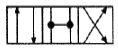
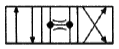
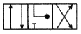
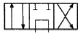
(정답률: 58%)
66. 작동 방식이 스프링 부하형과 같으나 필요에 따라서 외부 신호에 의하여 역류도 허용될 수 있는 밸브는?
- 카운터 밸런스 밸브
- 파일럿조작 체크밸브
- 셔틀 밸브
- 체크 밸브
(정답률: 46%)
67. 다음 중 릴리프 밸브의 기능에 대한 설명으로 가장 적절한 것은?
- 유압회로의 최고 압력을 제한하여 과부하 방지
- 유압회로에 의하여 가해지는 속도 변경
- 유압회로의 압력을 정지 운동으로 변경
- 유압회로의 압력을 회전 운동으로 변경
(정답률: 43%)
68. 유압펌프의 용적효율을 ηv, 기계효율을 ηt라고 할 때 전효율을 구하는 식으로 옳은 것은? (단, 압력효율은 무시한다.)
- ηt×ηv
- ηv/ηt
- ηt/ηv
- 1-ηv/ηt
(정답률: 50%)
69. 작동유가 가지고 있는 에너지를 잠시 저장했다가 이것을 이용하여 충격 완충용으로 사용할 수 있는 유압기기는?
- 축압기
- 유체 커플링
- 유량 제어 밸브
- 압력 제어 밸브
(정답률: 56%)
70. 다음 중 유압에서 사용되는 속도제어 회로의 종류가 아닌 것은?
- 미터 인 회로
- 미터 아웃 회로
- 블리드 오프 회로
- 최대압력 제한 회로
(정답률: 65%)
71. 무한궤도식 도저에서 트랙을 도저로부터 분리해야 할 경우가 아닌 것은?
- 트랙 교환 시
- 트랙 장력 조정 시
- 스프로킷 교환 시
- 실(seal) 교환 시
(정답률: 43%)
72. 스크레이퍼의 작업장치 중 볼(bowl)의 앞 벽을 형성해주고 토사의 배출구를 닫아 주는 문의 역할을 하는 것은?
- 커팅 에지(cutting edge)
- 이젝터(ejector)
- 에이프런(apron)
- 푸시 블록(push block)
(정답률: 45%)
73. 모터 그레이더의 주행 동력 전달장치 구성품으로 볼 수 없는 것은?
- 클러치
- 변속기
- 탠덤 드라이브장치
- 시어 핀
(정답률: 67%)
74. 덤프 트럭(Dump truck)에서 짐을 부리는 덤프 방식에 따라 분류할 때 이에 속하지 않는 것은?
- 리어(Rear) 덤프 트럭
- 사이드(Side) 덤프 트럭
- 보텀(Bottom) 덤프 트럭
- 4방향(4-way) 덤프 트럭
(정답률: 45%)
75. 압력판으로 화물을 위해서 강하게 눌러 거친 지면이나 경사진 곳에서도 안전하게 운반적재가 가능하여, 유리제품이나 깨지기 쉬운 화물의 취급에 가장 적합한 지게차는?
- 로드 스태빌라이저(load stabilizer) 형
- 블록 클램프(block clamp) 형
- 힌지드 포크(hinged fork) 형
- 드럼 클램프(drum clamp) 형
(정답률: 34%)
76. 불도저에서 1시간 당 작업량을 Q(m3/h), 사이클 시간을 Cm(min), 체적환산계수를 f, 도저의 작업효율을 E라고 할 때, 레이드 용량(1회의 흙 운반량, m3) q를 구하는 식으로 옳은 것은?
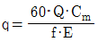
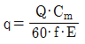
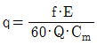
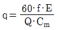
(정답률: 40%)
77. 아스팔트 믹싱 플랜트(Asphalt mixing plant)에서 스크린 진동 등의 작동 과정에서 일으키는 먼지를 흡수하여 배출시키는 장치는?
- 집진기
- 등급 분류기
- 건조기
- 아스팔트 캐틀
(정답률: 57%)
78. 다음 중 굴삭기의 규격을 표시하는 단위는?
- 표준 버킷의 산적용량(m3)
- 작업가능상태의 중량(t)
- 최대 들어올림 용량(t)
- 표준 배토판 길이(m)
(정답률: 20%)
79. 고점도 유체 및 응고성 유체가 흐르는 플랜트 배관인 경우 동결방지와 온도유지 등을 위하여 사용되는 배관은?
- 코킹(caulking) 배관
- 인젝션(injection) 배관
- 프로세스(process) 배관
- 증기 트레이스(steam trace) 배관
(정답률: 53%)
80. 7.5t의 짐을 2m/s의 속도로 견인하는 건설기계의 견인동력은 약 몇 kW인가? (단, 견인 마찰계수는 0.2이다.)
- 29.4
- 34.6
- 42.7
- 50.4
(정답률: 24%)